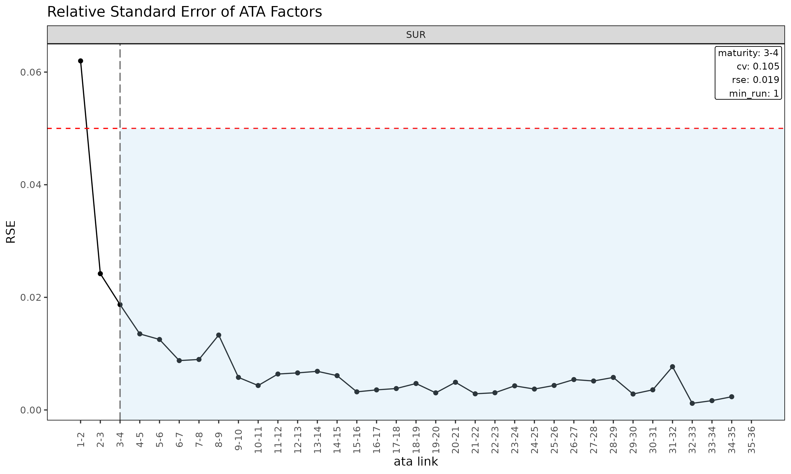
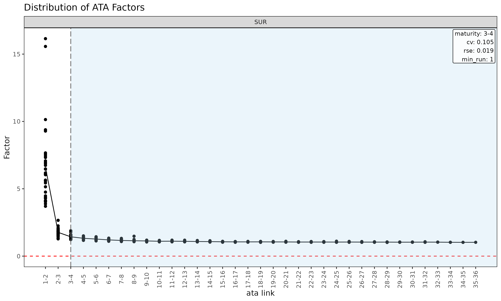
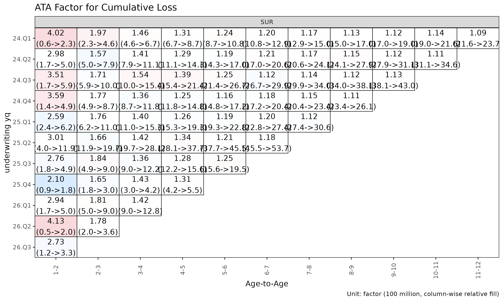
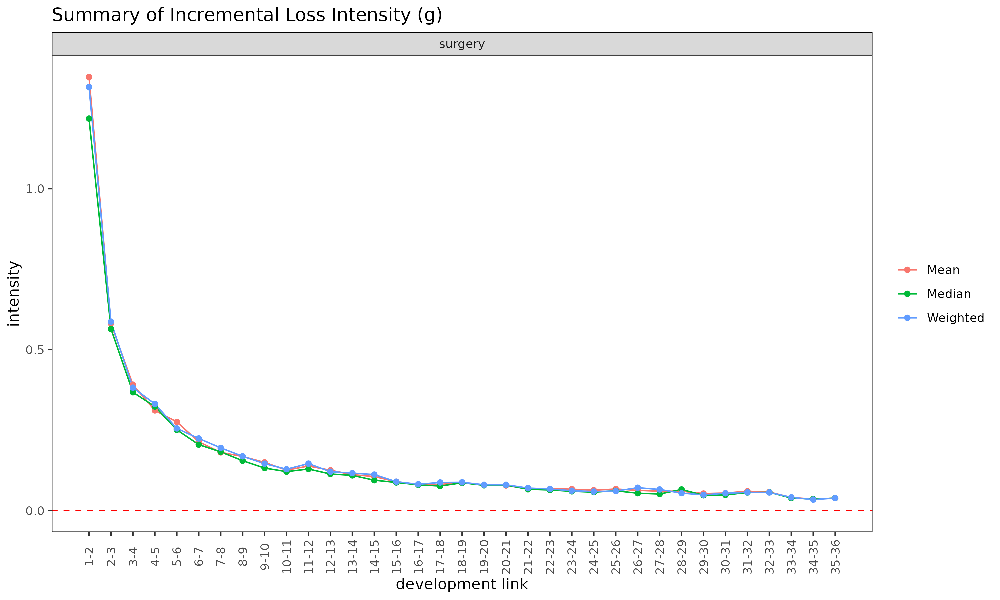
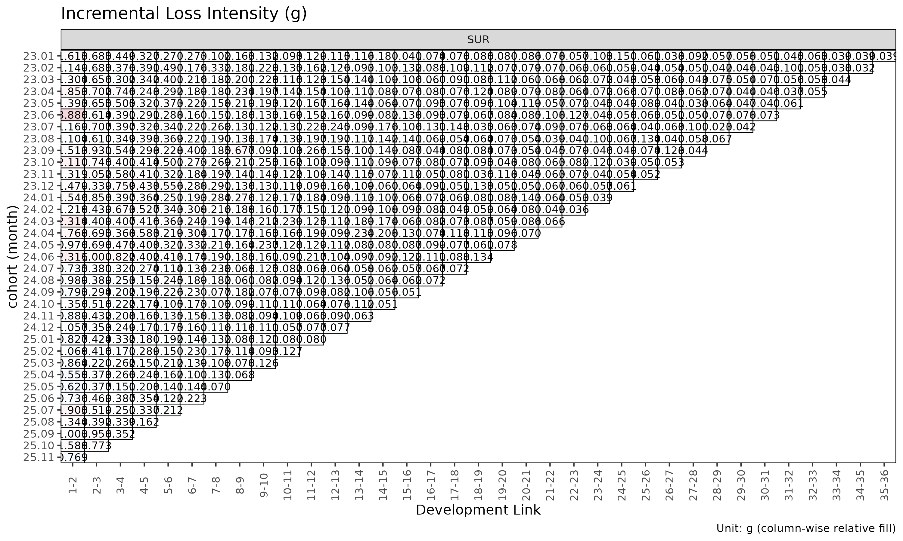
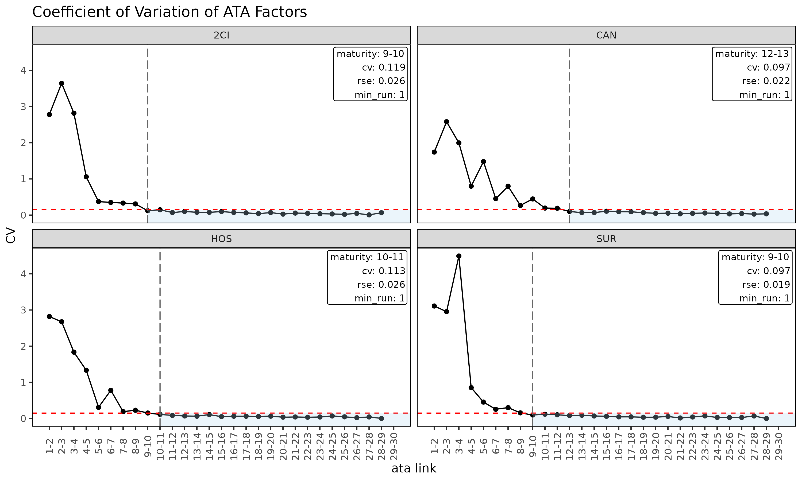

Triangle, Link and Maturity: data structures and factor diagnostics
Source:vignettes/triangle-link-and-maturity.Rmd
triangle-link-and-maturity.RmdBefore fitting a chain ladder or loss-ratio model, it pays to inspect
the underlying triangle and the per-link factor table derived from it.
This vignette covers the Triangle and Link
data structures, their diagnostic plots, and
detect_maturity() — the dev-axis test that determines where
the link table’s ATA factors are stable enough to trust for chain-ladder
projection.
Triangle-level diagnostics
For brevity this vignette uses the SUR group only —
every step generalises to multi-group input.
library(lossratio)
data(experience)
exp <- experience[coverage == "SUR"]
tri <- build_triangle(exp, group_var = coverage)Cohort trajectories
plot(tri) # cumulative loss-ratio trajectories per cohort
plot(tri, value_var = "lr_incr") # incremental loss ratio instead of cumulative
plot(tri, summary = TRUE) # raw + overlay (mean / median / weighted)
The summary = TRUE overlay computes mean, median, and
weighted lr at each dev and overlays them on the cohort lines. Useful
for spotting cohorts that deviate from the central tendency.
Cell heatmap
plot_triangle(tri, value_var = "lr") # cumulative lr
plot_triangle(tri, value_var = "lr_incr") # incremental lr
# detail labels (ratio + loss/premium amounts) are 2-line — use quarterly cells
tri_q <- build_triangle(exp, group_var = coverage, grain = "Q")
plot_triangle(tri_q, label_style = "detail") # ratio + (loss / premium)
Group statistics by dev
sm <- summary(tri)
head(sm)
#> Key: <coverage, dev>
#> coverage dev n_obs lr_mean lr_median lr_wt lr_incr_mean
#> <char> <int> <int> <num> <num> <num> <num>
#> 1: SUR 1 36 0.2522898 0.2393582 0.2525932 0.2522898
#> 2: SUR 2 35 0.8030639 0.7859128 0.7890646 1.3572087
#> 3: SUR 3 34 0.9258662 0.8997912 0.9204360 1.1519240
#> 4: SUR 4 33 0.9856772 0.9716558 0.9778502 1.1797269
#> 5: SUR 5 32 1.0336648 1.0502252 1.0447602 1.2268717
#> 6: SUR 6 31 1.0945723 1.1832332 1.0892484 1.3676102
#> lr_incr_median lr_incr_wt
#> <num> <num>
#> 1: 0.2393582 0.2525932
#> 2: 1.2618216 1.3280769
#> 3: 1.1517980 1.1728982
#> 4: 1.1167740 1.1742272
#> 5: 1.2663384 1.3110155
#> 6: 1.2676379 1.2752751Returns a TriangleSummary object with mean / median /
weighted loss ratios per (group, dev) cell.
Link / factor diagnostics
The Link object is the link table (age-to-age factor
table) built from the triangle. In single-variable mode it carries the
observed ATA factors; with premium_var it carries the
ED-style intensities
.
ata <- build_link(tri, loss_var = "loss")
sm <- summary(ata, model = "ata", alpha = 1)
head(sm)
#> Key: <coverage>
#> coverage ata_from ata_to ata_link mean median wt cv f f_se rse
#> <char> <num> <num> <fctr> <num> <num> <num> <num> <num> <num> <num>
#> 1: SUR 1 2 1-2 6.595 6.089 6.163 0.427 6.163 0.382 0.062
#> 2: SUR 2 3 2-3 1.765 1.768 1.739 0.157 1.739 0.042 0.024
#> 3: SUR 3 4 3-4 1.435 1.400 1.418 0.105 1.418 0.027 0.019
#> 4: SUR 4 5 4-5 1.324 1.331 1.339 0.068 1.339 0.018 0.014
#> 5: SUR 5 6 5-6 1.267 1.246 1.243 0.070 1.243 0.016 0.013
#> 6: SUR 6 7 6-7 1.204 1.194 1.205 0.048 1.205 0.011 0.009
#> sigma n_obs n_valid n_inf n_nan valid_ratio
#> <num> <num> <num> <num> <num> <num>
#> 1: 6207.618 35 35 0 0 1
#> 2: 1689.250 34 34 0 0 1
#> 3: 1372.883 33 33 0 0 1
#> 4: 1105.053 32 32 0 0 1
#> 5: 1086.826 31 31 0 0 1
#> 6: 812.770 30 30 0 0 1The summary() method on a Link object
(single-variable mode) computes per-link statistics that drive maturity
detection:
-
mean,median,wt— descriptive averages of observed ata factors at each link (excluding cohorts where the link is not observed). -
cv— coefficient of variation of the observed factors (relative spread, alpha-independent). -
f— WLS-estimated factor (volume-weighted byloss_from^alpha). -
f_se,rse— WLS standard error and relative standard error. -
sigma— Mack residual sigma per link. -
n_obs,n_valid,n_inf,n_nan,valid_ratio— observation counts and the share of finite ATA factors per link.
Diagnostic plots for the link table
plot(ata, type = "cv") # CV vs ata link with maturity overlay
plot(ata, type = "rse") # RSE vs ata link
plot(ata, type = "summary") # mean / median / wt overlay per link
plot(ata, type = "box") # boxplot of observed ata per link
plot(ata, type = "point") # scatter of observed ata per link
Triangle of ATA factors
plot_triangle(ata, label_size = 2.5) # heatmap of observed factors
plot_triangle(ata, label_size = 2.5, show_maturity = TRUE) # overlay maturity line
# detail labels are two lines and overlap on monthly cells — rebuild on
# the quarterly triangle so the two-line "factor (loss / premium)" text
# has room (label_size auto-shrinks to 2.2 in detail mode).
ata_q <- build_link(tri_q, loss_var = "loss")
plot_triangle(ata_q, label_style = "detail") # factor + (loss / premium)
The heatmap colours each cell by log(ata / median(ata))
within its link, so column-wise colour distinguishes cohorts that
deviate from the link’s median.
ED diagnostics
ed <- build_link(tri, loss_var = "loss", premium_var = "premium")
sm <- summary(ed, model = "ed", alpha = 1)
head(sm)
#> Key: <coverage>
#> coverage ata_from ata_to ata_link mean median wt cv g
#> <char> <num> <num> <fctr> <num> <num> <num> <num> <num>
#> 1: SUR 1 2 1-2 1.34661 1.21766 1.31614 0.47327 1.31614
#> 2: SUR 2 3 2-3 0.58109 0.56432 0.58674 0.37381 0.58674
#> 3: SUR 3 4 3-4 0.39105 0.36751 0.38178 0.43535 0.38178
#> 4: SUR 4 5 4-5 0.31110 0.32321 0.33127 0.35969 0.33127
#> 5: SUR 5 6 5-6 0.27543 0.25088 0.25518 0.43531 0.25518
#> 6: SUR 6 7 6-7 0.21364 0.20479 0.22393 0.31371 0.22393
#> g_se rse sigma n_obs n_valid n_inf n_nan valid_ratio
#> <num> <num> <num> <num> <num> <num> <num> <num>
#> 1: 0.09107 0.06919 2930.7438 35 35 0 0 1
#> 2: 0.03508 0.05979 1580.2621 34 34 0 0 1
#> 3: 0.02931 0.07677 1587.1869 33 33 0 0 1
#> 4: 0.02135 0.06444 1319.1106 32 32 0 0 1
#> 5: 0.02087 0.08178 1421.4780 31 31 0 0 1
#> 6: 0.01273 0.05686 937.7864 30 30 0 0 1
plot(ed, type = "summary")
plot(ed, type = "box")
plot_triangle(ed) # ED triangle (default size)
summary(link, model = "ed") is the ED-side analogue of
the single-variable summary(), computing per-link
statistics for the intensity
.
Maturity detection
The maturity point is the development link beyond which age-to-age
factors are stable enough to trust for chain-ladder projection. Used
internally by fit_lr(method = "sa") to switch from ED to
CL.
Detecting maturity
detect_maturity() takes a Triangle directly
— the underlying single-variable Link and its WLS summary
are built internally:
mat <- detect_maturity(
tri,
loss_var = "loss",
max_cv = 0.15, # CV must be below this
max_rse = 0.05, # RSE must be below this
min_valid_ratio = 0.5, # at least 50% finite cohorts at the link
min_n_valid = 3L, # at least 3 finite cohorts
min_run = 1L # at least 1 consecutive mature link
)
print(mat)
#> Key: <coverage>
#> coverage ata_from ata_to ata_link mean median wt cv
#> <char> <int> <int> <char> <num> <num> <num> <num>
#> 1: SUR 3 4 3-4 1.434507 1.400098 1.417706 0.1053282
#> f f_se rse sigma n_obs n_valid n_inf n_nan
#> <num> <num> <num> <num> <int> <int> <int> <int>
#> 1: 1.417706 0.02651852 0.01870522 1372.883 33 33 0 0
#> valid_ratio
#> <num>
#> 1: 1A row per group with the first development link satisfying all
thresholds, carrying the link’s full statistics. The threshold arguments
are also stored as attributes on the returned Maturity
object.
Threshold semantics
-
max_cv— coefficient of variation of the observed ATA factors at the link. Caps relative spread regardless ofalpha. -
max_rse— relative standard error of the WLS-estimated factorf. Captures parameter uncertainty rather than residual spread. -
min_valid_ratio— minimum share of cohorts with a finite ATA at the link. Guards against links where most observations are zero / NA / Inf. -
min_n_valid— minimum count of finite cohorts at the link. Absolute floor for thin-data tails. -
min_run— minimum number of consecutive mature links. Withmin_run = 1L(default) the first qualifying link wins; setting it to2Lor higher requires sustained stability.
Tune these to your portfolio’s volatility profile. Tight thresholds
(e.g. max_cv = 0.05) push maturity later; loose thresholds
push it earlier.
Use in fitting
detect_maturity() is also called internally by
fit_ata() and fit_cl() when
maturity_args is supplied (the alpha of the
internal summary() step is taken from those callers):
fit_ata(tri, loss_var = "loss",
maturity_args = list(max_cv = 0.08, min_run = 2L))
fit_cl(tri, loss_var = "loss",
maturity_args = list(max_cv = 0.08))
fit_lr(tri, method = "sa",
maturity_args = list(max_cv = 0.08))For fit_lr(method = "sa") the detected maturity point
determines the dev at which the projection switches from ED (early dev)
to CL (later dev).
Group-wise output
For multi-group triangles detect_maturity() returns one
row per group, each detected independently with the same thresholds:
tri_all <- build_triangle(experience, group_var = coverage)
detect_maturity(tri_all, loss_var = "loss")
#> Key: <coverage>
#> coverage ata_from ata_to ata_link mean median wt cv
#> <char> <int> <int> <char> <num> <num> <num> <num>
#> 1: CAN 8 9 8-9 1.079323 1.060341 1.065354 0.07131509
#> 2: CI 11 12 11-12 1.094403 1.070561 1.114066 0.07563394
#> 3: HOS 6 7 6-7 1.244842 1.184287 1.205542 0.13563426
#> 4: SUR 3 4 3-4 1.434507 1.400098 1.417706 0.10532824
#> f f_se rse sigma n_obs n_valid n_inf n_nan
#> <num> <num> <num> <num> <int> <int> <int> <int>
#> 1: 1.065354 0.01384183 0.01299271 637.2413 28 28 0 0
#> 2: 1.114066 0.01954799 0.01754653 1459.6221 25 25 0 0
#> 3: 1.205542 0.02746025 0.02277835 220.8771 30 30 0 0
#> 4: 1.417706 0.02651852 0.01870522 1372.8834 33 33 0 0
#> valid_ratio
#> <num>
#> 1: 1
#> 2: 1
#> 3: 1
#> 4: 1The link diagnostic plot makes the result easier to read — each cv
gets its own panel and the vertical line marks the maturity point where
CV first drops below max_cv:
plot(build_link(tri_all, loss_var = "loss"), type = "cv")
Validation before building
If gaps in the development sequence are suspected, inspect them
before build_triangle():
gaps <- validate_triangle(exp, group_var = coverage, cohort_var = "uy_m", dev_var = "dev_m")
head(gaps)
#> <TriangleValidation>
#> Cohort dev-sequence gaps : noneReturns a TriangleValidation object with one row per
cohort that has non-consecutive development periods. An empty result
means the triangle is clean.
If gaps exist, options:
- Fix the data source (preferred).
- Drop offending cohorts.
- Pass
fill_gaps = TRUEtobuild_triangle()to zero-fill missing cells (use with care — inflatesn_obs).
Recent-diagonal subset
When older cohorts are no longer representative (rate change, reserving regime shift), restrict estimation to the recent calendar diagonals:
fit_ata(tri, loss_var = "loss", alpha = 1, recent = 12) # last 12 calendar diagonals
#> <ATAFit>
#> alpha : 1
#> sigma_method: min_last2
#> recent : 12
#> regime_break: none
#> use_maturity: FALSE
#> groups : coverage
#> n_groups : 1
#> ata links : 35
fit_cl(tri, loss_var = "loss", recent = 12)
#> <CLFit>
#> method : basic
#> loss_var : loss
#> weight_var : none
#> alpha : 1
#> recent : 12
#> use_maturity: FALSE
#> tail_factor : 1
#> groups : coverage
#> periods : 36
fit_lr(tri, recent = 12)
#> <LRFit>
#> method : sa
#> loss_var : loss
#> premium_var : premium
#> loss_alpha : 1
#> premium_alpha: 1
#> delta_method : simple
#> conf_level : 0.95
#> ci_type : analytical
#> sigma_method : min_last2
#> recent : 12
#> regime_break : none
#> maturity[SUR] : 25
#> groups : coverage
#> periods : 36recent = K keeps only rows whose calendar position
(rank(cohort) + dev - 1) is among the latest K
per group.
Workflow checklist
Before fitting:
-
validate_triangle()— schema and gap check. -
build_triangle()— canonical shape with derived columns. -
plot(tri)/plot_triangle(tri)— visual inspection. -
summary(tri)— group-level central tendency. -
build_link()+plot(link, type = "cv")— link stability. -
detect_maturity()— verify maturity detection produces a sensible point per group. -
detect_regime()(optional) — structural change diagnosis.
Then fit fit_lr() / fit_cl() with
confidence in the input data.
See also
-
vignette("getting-started")— full pipeline overview. -
vignette("regime")—detect_regime()deep dive. -
vignette("projection")— projection method choice.